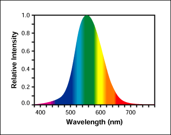
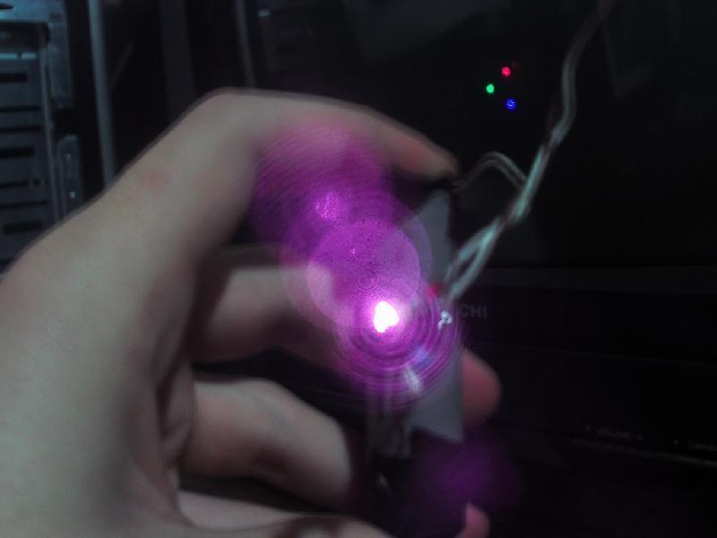
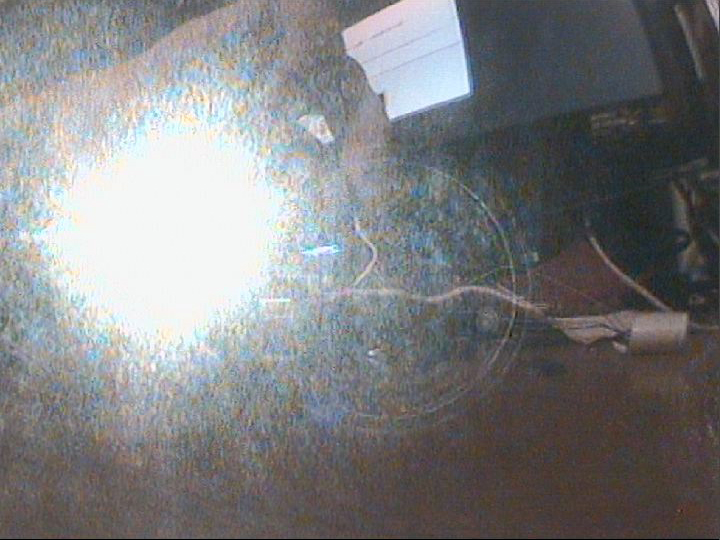
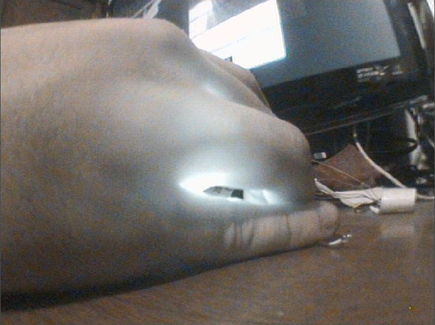

Segurança com Lasers
- Brincando com lasers vindos de CD-ROM
Vejo a maioria das pessoas que começam a se interessar por lasers, comprar aqueles apontadores lasers vermelhos que se compra por R$5 e começar a apontar por ai. Após um tempo a pessoa quer algo mais forte e procura na internet. A coisa mais comum de achar é: Laser from DVD Burner. É de fato, acho que todos que foram procurar lasers fortes na internet já passaram pela fase de desmontar um CD-ROM para pegar o laser (DVD é caro, CD-ROM tem uma pancada de CD-ROM velho).
Ele vai com toda empolgação e remove o Diodo Laser da Unidade Óptica, até arranja um circuitinho na internet para ligar ele. Liga ele e se decepciona. Apenas um brilho aparentemente fraco e vermelho. Ta, esse deve estar com problema, certo?
ERRADO! JAMAIS OLHE PARA ESSE BRILHO "FRACO" VINDO DO DIODO LASER
Você não vê, mas ele está emitindo uma quantidade massiva de luz, e a maior parte das pessoas não sabe. Quer saber o por quê? Explicarei então neste documento de segurança.
- Apontadores Lasers verdes e seu funcionamento.
Apontadores Laser Verdes geram a luz verde apartir de uma luz Infra-vermelha. Essa luz Infra-vermelha (que fica em 808nm) excita um cristal de um material, que gera outra luz infra-vermelha, essa em 1064nm. Após isso, a luz desse cristal é jogada em outro cristal de outro material, dessa vez um dobrador de frequência, que faz os 1064nm virarem 532nm, a nossa então cor verde. Porém um pouco de Infra-vermelho ainda sobra tanto em 808nm quanto em 1064nm após a conversão pro verde. E caso você filtre a luz verde, também verá uma luz "fraca" e vermelha vindo do diodo laser.
- Espectro de luz visivel, e sensibilidade do olho humano.
Tá, mas pra que você falou do laser verde? Bem, se vocês já viram os lasers de diversas cores, podem reparar que o verde é o unico que em relativa baixa potência (10mW) é possível ver o raio a noite, e nas demais cores, só em potências bem mais altas. Agora, você já parou pra pensar o porque disso? Os olhos humanos são capazes de enxergar cores de apenas 720nm até 380nm. Reparou que os 808nm e os 1064nm estão fora dessa faixa? Pois é, você vê apenas um teco delas por causa da potência do diodo laser (ta vendo o perigo?), se já não bastasse isso, o olho humano ainda não recebe por igual as cores. Dependendo do comprimento de onda da cor, ele tem uma resposta melhor ou pior da cor. Para entender melhor, imagine uma lâmpada ideal de pura cor branca. O branco é a soma de todas as cores. Porém o teu olho terá uma resposta diferente para cada cor que compõe esse branco, o grafico abaixo mostra como é a resposta relativa do olho em relação ao comprimento de onda.

Fig. 1: Curva de resposta relativa do olho humano.
Como você pode ver, quanto mais saimos do laranja e irmos para o vermelho, o olho fica menos sensível a cor exposta, isso significa que você precisará de mais brilho na luz para que você possa ve-la com a mesma intensidade (A mesma coisa para o lado do violeta).
Você não consegue ver infra-vermelho, mas algo em sua casa pode ver. Uma câmera de video (Seja celular ou webcam).
- Laser de impressora laser, e seu brilho invisível.
Peguei um diodo laser de uma impressora laser. Não sei qual o comprimento de onda dele, mas é infra-vermelho e ao olho nú também só tem akele brilho "fraco". O diodo está rodando apartir de um driver de um laser verde de 30mW (260mA). Olhe a foto tirada dele:

Fig. 2: Diodo Laser apontado para câmera.
Hmm, bem mais do que você vê não é? É, e bem mais forte. Mas e se eu te dizer, que sua câmera tem filtro Infra-Vermelho na lente dela? Sim, as câmeras usam isso por que a luz infra-vermelha deteoriora a qualidade das imagens coloridas. Quer ver como seria uma foto sem o filtro infra-vermelho? Bem, peguei uma câmera de vigilância aqui, abri ela e tirei o filtro. Liguei no pc e tirei umas fotos. Vejam só:

Fig. 3: Diodo Laser apontado para câmera sem Filtro IR
Beeeeeeeem mais forte não? Pois é, a luz consegue passar até através da minha mão!

Fig. 4: Luz infra-vermelha atravessando minha mão.
Ok, mas você quer algo que dê pra ver melhor a diferença? Hmm, entendo. Liguei então a câmera de vigilancia e coloquei em fullscreen no monitor mostrando a imagem em tempo real. E com uma maquina fotografica tirei fotos da tela do computador junto com o laser. Veja só o resultado:
Fig. 5: Mostrando na tela a imagem vinda da câmera sem Filtro IR, e a fotografia de uma câmera com filtro IR.
Fig. 6: Laser Iluminando a Mesa, repare que na câmera sem filtro a mesa está bem iluminada, o que não acontece na foto.
- Conclusão
Ou seja, aquele "fraco" brilho vermelho, é na verdade uma luz BEM forte que você não enxerga, mas que certamente iria causar sérios danos em sua retina. Talvez um laser de menos de 5mW não cause dano instantaneo a sua retina, porém não usar óculos de segurança, pode fazer sua retina ir se deteriorando ao longo do tempo.
Então, não seja enganado pelo brilho "fraco" vermelho.
Só para vocês verem, abaixo vai uma foto do laser de impressora laser num dissipador, rodando a apenas 10mW sem lentes.
Fig. 7: Laser de impressora laser rodando a 10mW sem lentes
Este laser não faz nem se quer um brilho fraco na mesa visto através de uma câmera comum, mas com uma câmera sem filtro IR, ele ilumina a mesa completamente.
Espero que tenha dado pra entender o por que usar óculos de segurança, proteja-se caso for mecher com lasers fortes assim.
Boa sorte!

Esta obra de EnergyLabs Brasil, foi licenciada com uma Licença Creative Commons - Atribuição - Partilha nos Mesmos Termos 3.0 Não Adaptada.
Permissões adicionais ao âmbito desta licença podem estar disponíveis em http://www.energylabs.com.br.